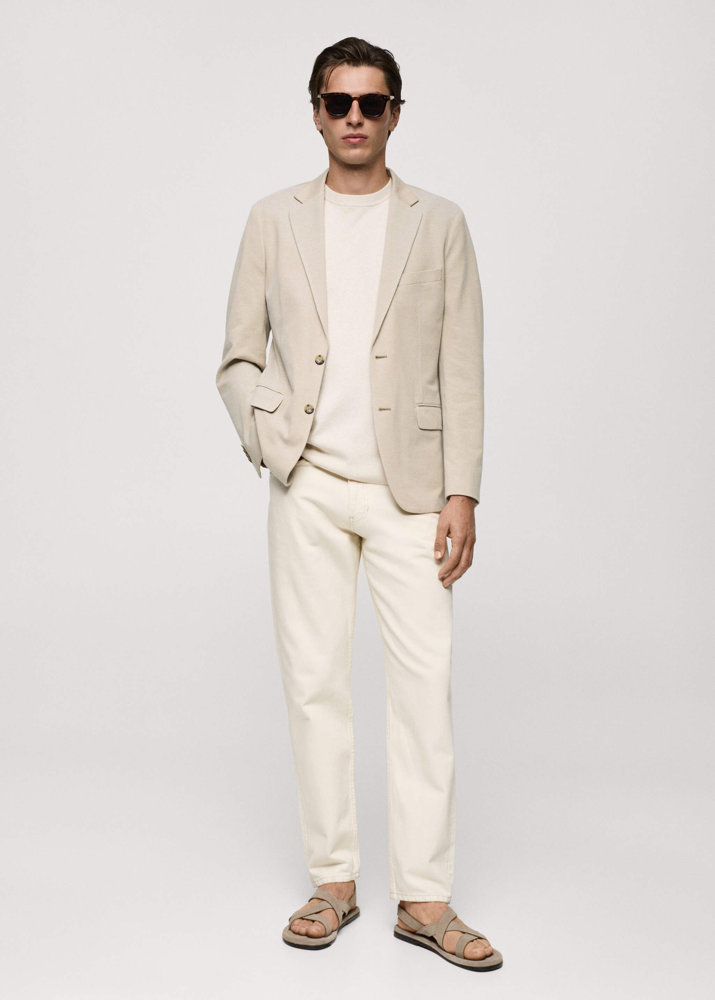
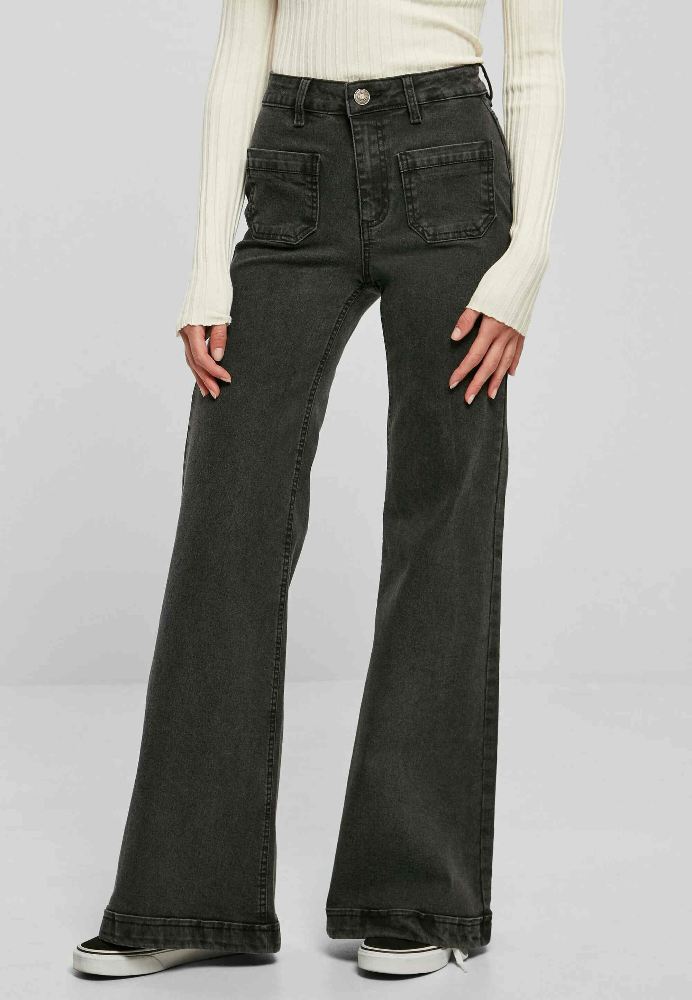
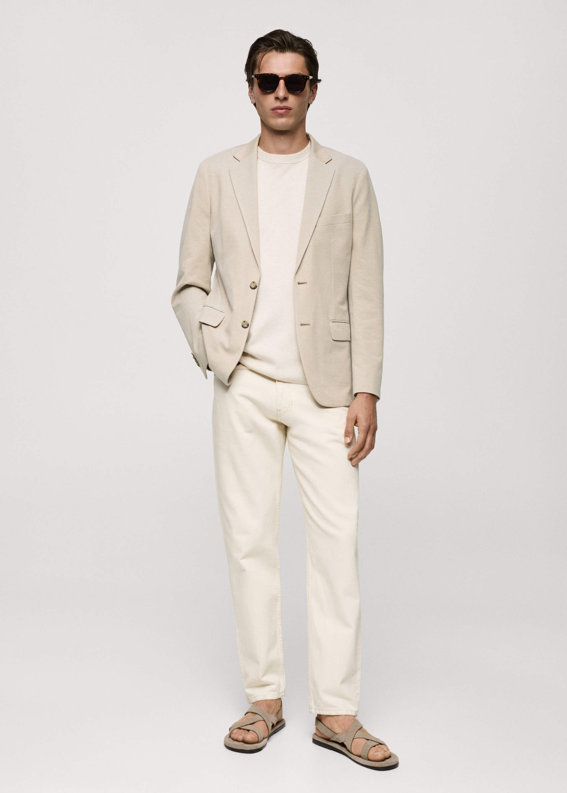
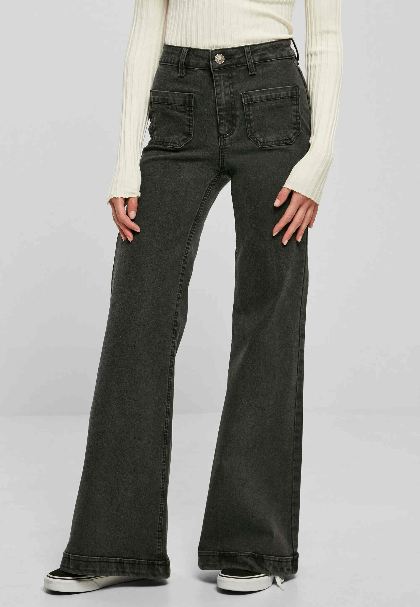

The latest trend
Large, loose-fitting garments are a popular trend that continues to gain momentum. Items like blazers, sweaters, and trousers designed with an intentionally oversized fit provide both comfort and a statement of style. The secret to mastering this look lies in pairing these voluminous pieces with tailored accents to achieve a balanced and sophisticated appearance.
Shopping tips
When shopping for clothes, it's important to prioritize quality over quantity. Invest in versatile, timeless pieces like a well-tailored blazer or a pair of classic jeans. For example, a structured beige blazer can instantly elevate a casual look, and classic dark-wash jeans are a wardrobe essential for any occasion. Avoid buying too many trends at once – instead, focus on building a wardrobe with staple items that can be mixed and matched to create different styles. Remember that size and fit play a significant role; a tailored look gives a more polished appearance. Always try clothes on before purchasing, and look for deals or sales at reliable websites and physical stores to get the best value for your money.
Style guide
Defining your personal style starts with understanding your preferences and lifestyle. Build a foundation of timeless wardrobe essentials like a tailored blazer, a classic white shirt, and versatile jeans. For inspiration, think of a crisp, monochrome outfit paired with elegant accessories. Experiment with colors and patterns that resonate with you, but ensure they complement your complexion and fit well. Accessories like a statement necklace or a leather belt can add personality, but simplicity often speaks volumes. Incorporate trends sparingly to keep your look fresh without overshadowing your core style. Most importantly, confidence is the key to pulling off any outfit – wear what makes you feel your best.
 


